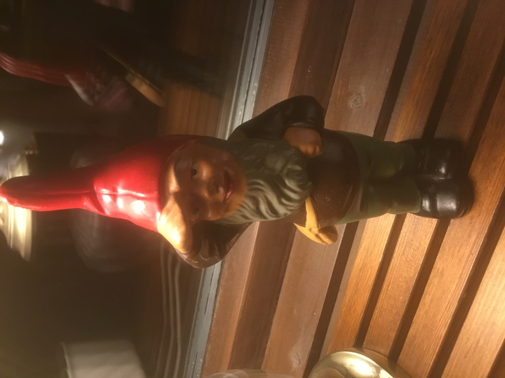
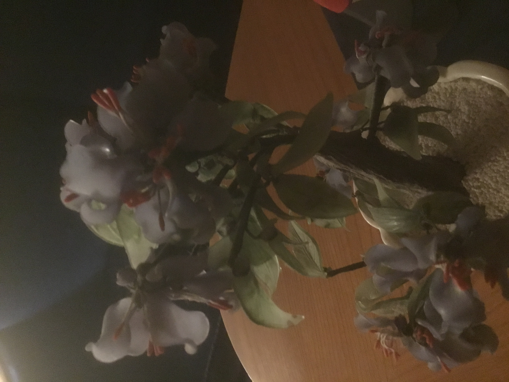

Det var dagen efter julafton. Tomten sover djupt efter en lååång låååång natt med att dela ut julklapparna. Men helt ovetandes hade fyra paket hamnat på vift! Julmössen hade nafsat i julsäcken när Tomten var på Kindsvägen 17 och gömt undan paketen som låg i botten. Kan några snälla barn hjälpa till att följa mus-spåren och hitta de försvunna julklapparna?
Middagen var i full fart och mössen låg och spionerade. Vid nötbordet låg de under den mittersta av dessa tre ting...
Mössen tassade vidare sen till den stora julbocken och beundrade de sex sångstämmorna...
Efter att ha njutit av den fina sången, så begav de sig reflexmässigt ut på sightseeing i London...
Sen hälsade de på denna tomtenisse som tittade upp och spejade att denna första fina skulle falla under julen...
Långt bort kunde mössen höra klangande bjällror två, där den ena av dem för något extra slå...
När julemössen vandrat omkring i huset, så springer de på dessa sju olika gossar stå i rad, och hejade glatt på den åttonde...
Mössen tisslar och tasslar runt i hela huset. Förutom ett ställe de alla undvikar. En inburad buse och brottsling har sitt porträtt hängades framför sin celldörr...
Nu ville mössen drömma sig bort till varmare tider, och vilade sig under denna blomma. Förbi brumma ett par djurvänner som var ute på en tur...
Tidpunkten för brottet är väl känt. För när mössen nafsade iväg paketen under kvällsmörkret, slog blixten ner och klockan stannade...
Nu är hela händelsförloppet känt och vi kan nu följa paketens resa. Från julgranen börjar vi och går mot det sammetsröda. 14 steg bort kan vi sen beskåda det blåa havet. Följer vi sedan österut tills vi når en rygg, så skådar vi 3x3 jämna högar. Förutom att i en av högar sticker något ut, där de vita tråden kommer leda oss rätt...